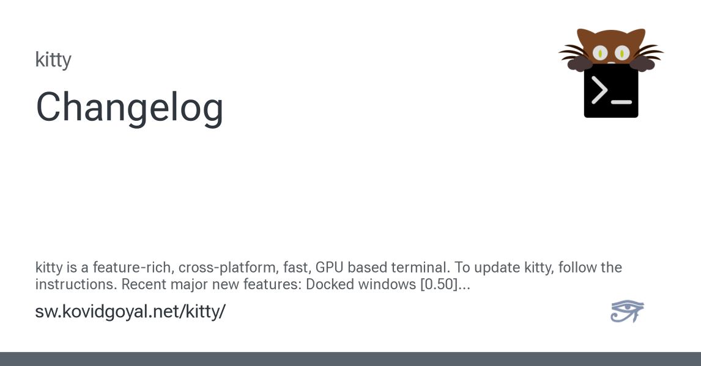

Security & Hardware, Continued
Security Briefing
PHP2Shell's lesson: AI is exposing forty years of legacy code

IEEE Spectrum reports on PHP2Shell, the late-October PHP vulnerability that put sites from NASA to Wikipedia to the White House — anything built on WordPress or Drupal among them — at risk of both reading sensitive data and running code on the host. Researchers reported it to the PHP Foundation, and the patch shipped before any bad actor is known to have used it.[15]
The piece's thesis is the thread's: security AI has begun auditing at a scale humans never managed, and the backlog it exposes is old. "All the legacy software that was written by humans over the last 40 years is being exposed," Matt Suiche of Tolmo says; "now it is time for the technical debt to be paid off." Formal verification is racing to automate the patching side — one October 22 release generates both the patch and its correctness proof with LLMs — though the proof checker stays machine-verified "because LLMs hallucinate."[15] Johns Hopkins's Matthew Green puts the odds more coldly: "nobody's going to fix this problem until something really bad happens."[15] The top comment welcomes the reckoning after twenty-five years of scaffolding over root causes; a reply answers that the same tools are minting new technical debt much faster.[16]
Hardware DeskOn Linux, the RTX Spark laptop throttles its GPU to a third of Windows speed
A hands-on dual-boot test of an RTX Spark laptop — the MSI Prestige N16 Flip AI Plus — finds Linux fully usable, open kernel driver and all, except on wall power, where the GPU locks to roughly 780 MHz against Windows's 2.2 GHz. The cause, per the report: power delivery is run by a Windows-only Nvidia platform component, and its power-management table is encrypted in firmware that only the Windows driver can decrypt.[17]
The measured cost on GPT-OSS-120B: 65.4 tokens per second on Windows, 65.1 under WSL, 61 on a DGX Spark desktop — and 13.9 on native Linux in the same chassis.[17] The thread reads it as a referendum on Nvidia's closed-driver habits, and on local inference itself: one reader asks why anyone runs models on a laptop rather than a home machine reached over Tailscale; another answers that sovereign, unphoned-home compute is exactly the point.[18]
Practical Tech Corner
Field Desk
"The Internals of PostgreSQL" keeps the engine's anatomy free and current
Hironobu Suzuki's chapter-by-chapter anatomy of PostgreSQL — free to read at interdb.jp since September 2015, and past its eleventh anniversary — reached press time freshly enlarged: a section on asynchronous I/O landed in June, and a beta chapter on logical replication in May.[13] The thread, on its fourth visit since 2022, points readers to the highest-yield section: heap-only tuple updates, which apply only when no indexed column changes and the new row version fits the same page — so an index on a frequently updated column like status quietly defeats them, and a lowered fillfactor buys the room back.[14]
kitty 0.50 docks windows to the edges and saves sessions on logout
Version 0.50.0 of the kitty terminal, dated November 3, lets windows dock to tab and window edges — status bars, file trees — saves every instance's state, scrollback included, across logout and shutdown (encrypted on macOS), and adds workspace-style tabs that focus an existing match instead of spawning a new one. Wayland gets native-looking GNOME decorations and touchscreen support, and three new cursor shaders — railgun, torpedo, pixiedust — fly particles off the pointer in the style of neovide.[19]

The thread's most common question is how it compares with Ghostty; its most common aside is gratitude, plus the observation that the author also created Calibre. Not every reader is served: Windows users ask after alternatives, kitty running on Linux and macOS only.[20]
Quote of the Day
"The patch is LLM-generated, and then an LLM generates the proof that the patch is correct. The only thing not done by an LLM is the proof checker, because somebody has to check the proof, because LLMs hallucinate."
Sandeep Jana, on the PHP2Shell aftermath — IEEE Spectrum[15]
Classifieds — Rates: 1 Karma per line
UNINSTALLED: Postman CLI, Codex plugin, Claude Code plugin, remote MCP connection, one startup hook. Owner did not order them.[1]
WANTED: one Carminat navigation SD card, genuine factory CID, ~60 EUR shipped to Estonia. Buyer has since found another way.[3]
FOR EXCHANGE: light websites, taken as-is, for dark. Apply within Safari 27.3 beta; roughly 40% of readers are waiting.[5]